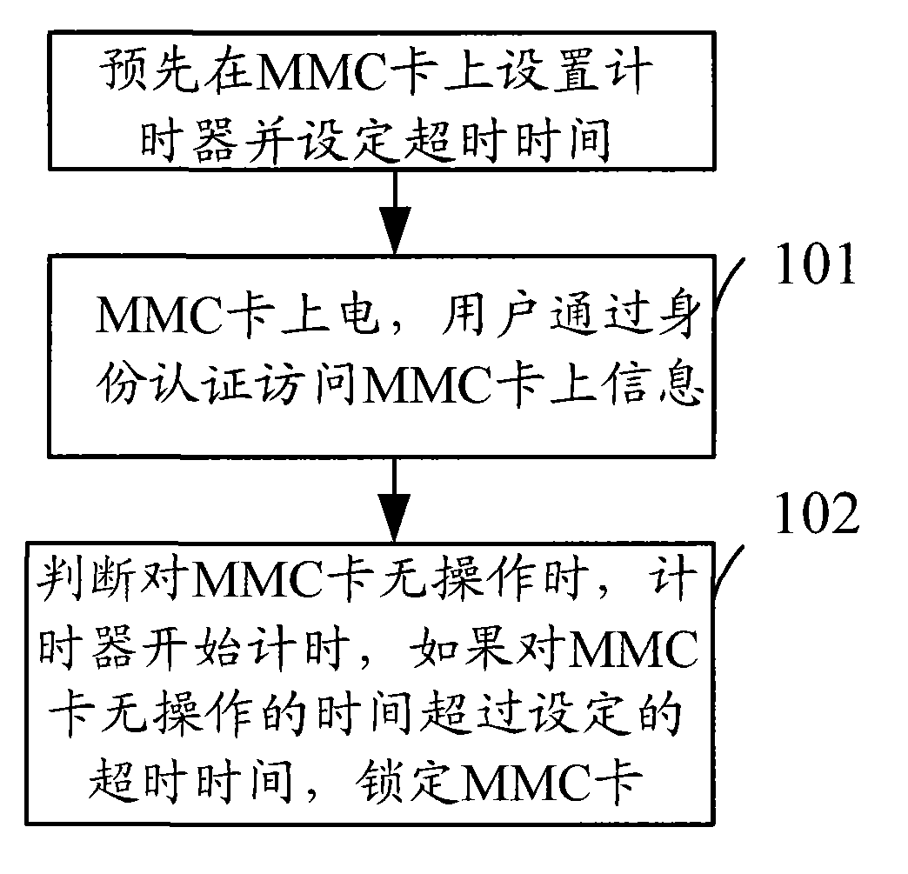

发明名称--一种移动存储卡访问超时保护方法
| 申请号 | CN200810104276.9 | 申请日 | 2008.04.17 | ||
| 公开（公告）号 | CN101261668A | 公开（公告）日 | 2008.09.10 | ||
| IPC分类号 | G06F21/00 | 申请（专利权）人 | 普天信息技术研究院有限公司; | ||
| 发明人 | 杨光敏;曹会扬; | 优先权号 |
摘要:
本发明公开了一种移动存储卡访问超时保护方法，通过在移动存储卡设定超时保护的超时时间，当判断对移动存储卡无操作的时间超过设定的超时时间时，将该移动存储卡置于锁定状态。从而在用户操作完移动存储卡忘记拔出的情况下，防止了非法用户对该移动存储卡上信息的非法访问，提高了移动存储卡的安全访问性，保护了用户的合法权益。
摘要附图:
